AmazonSSMManagedInstanceCore (shows as Managed in SSM)db-cred (keys: username, password)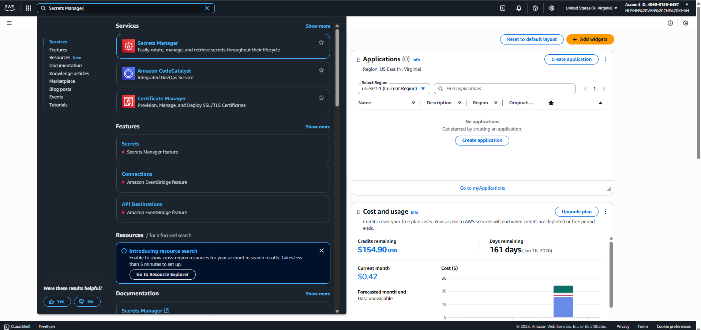 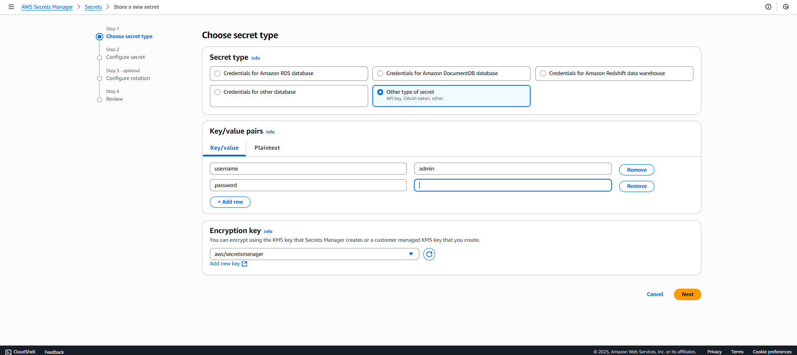 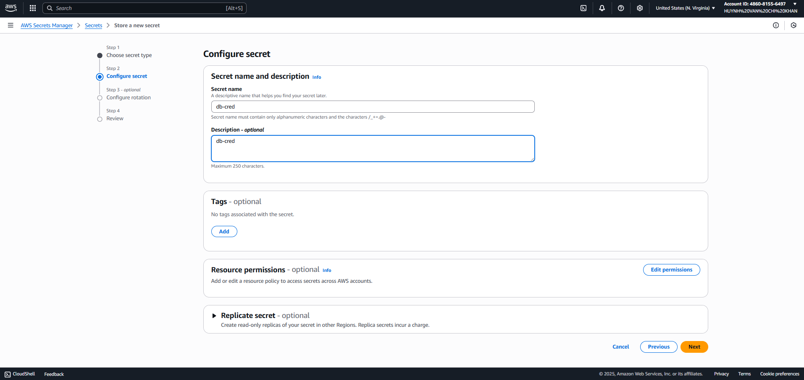
dr-alerts + subscribe email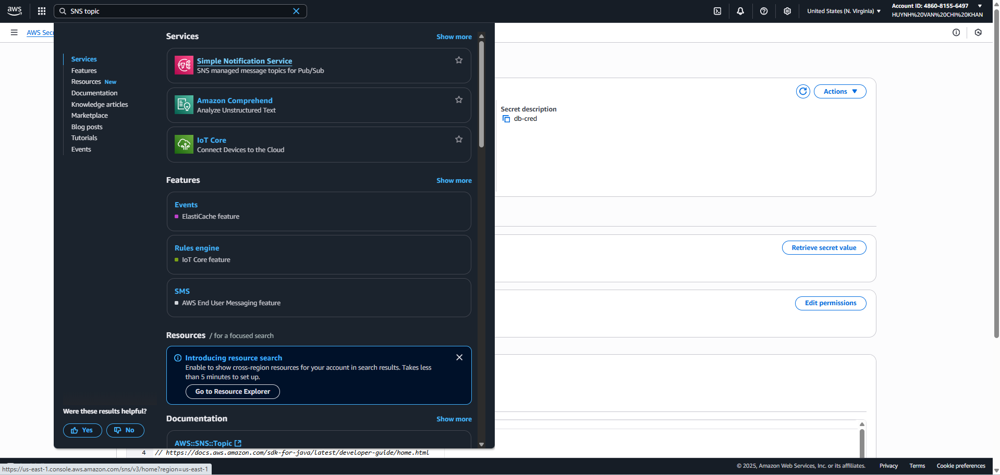 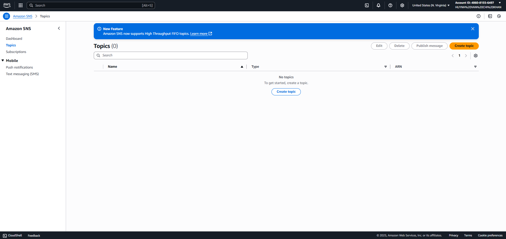 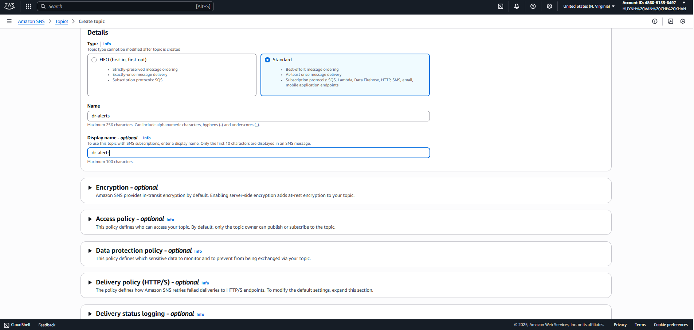 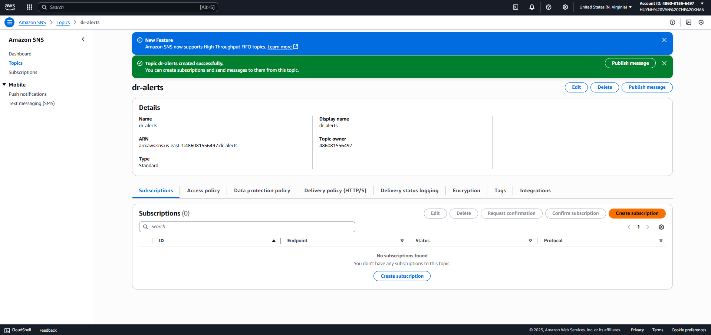 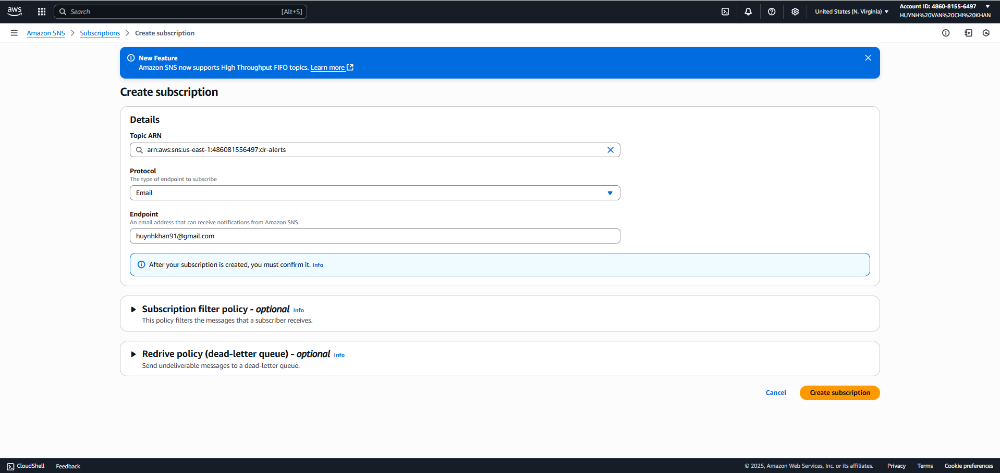 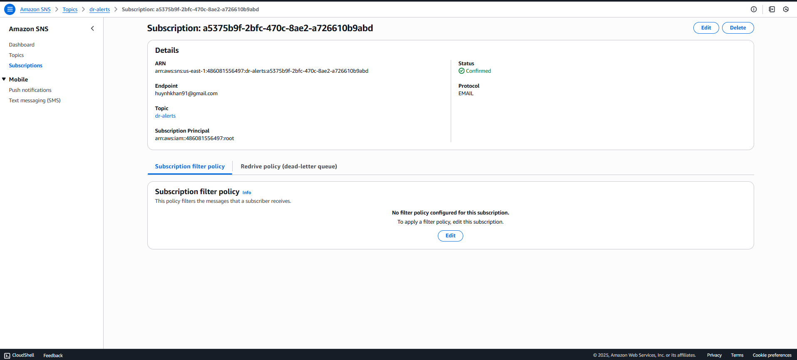
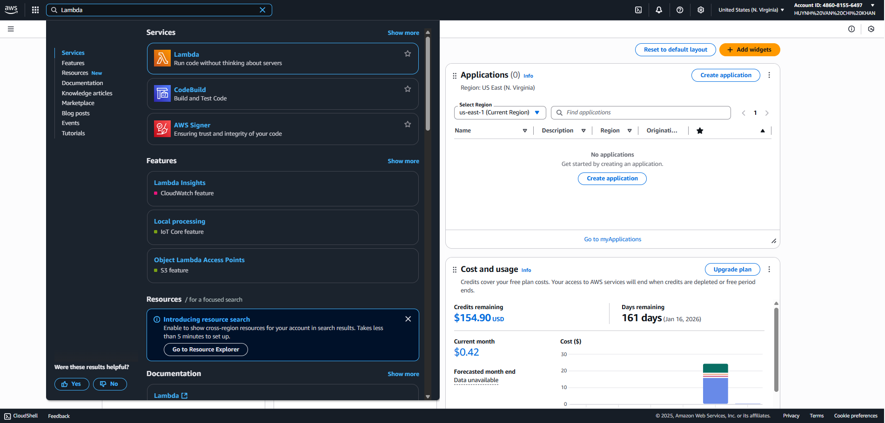 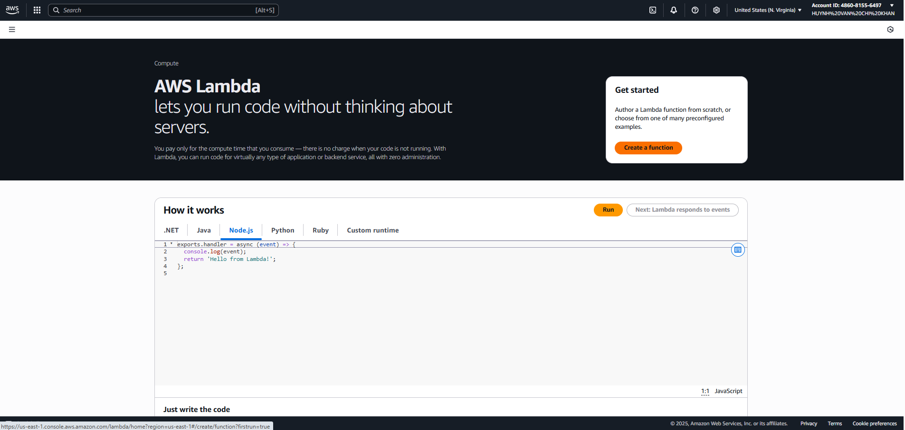 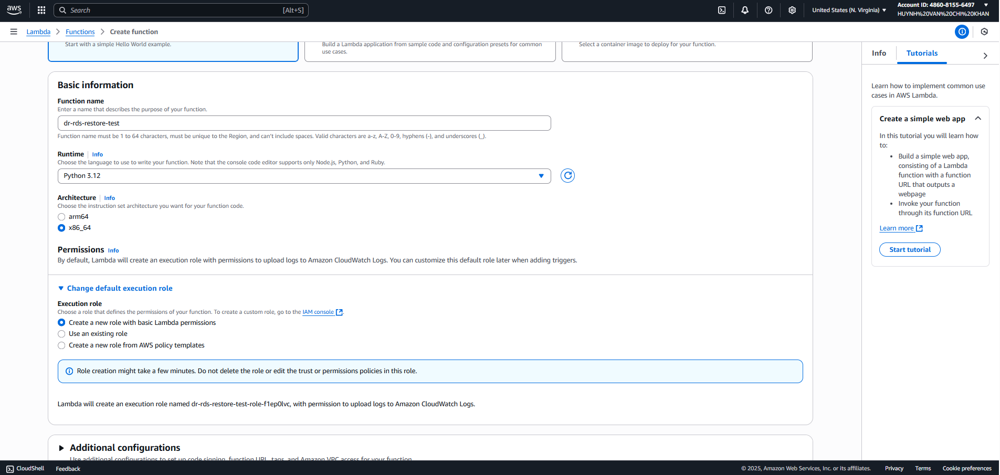 Environment variables:
TARGET_REGION,DB_INSTANCE_NAME,RDS_SUBNET_GROUP,RDS_SG_ID,INSTANCE_CLASS,SSM_INSTANCE_ID,DB_SECRET_ARN,SNS_TOPIC_ARN,AUTO_DELETE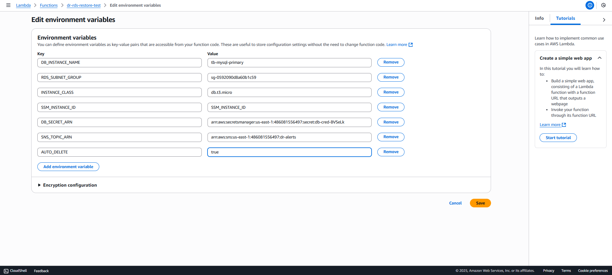 Source code:
import os, json, time, traceback
import boto3
from botocore.exceptions import ClientError
TARGET_REGION = os.environ.get('TARGET_REGION', 'us-east-1')
rds = boto3.client('rds', region_name=TARGET_REGION)
ssm = boto3.client('ssm', region_name=TARGET_REGION)
secrets = boto3.client('secretsmanager', region_name=TARGET_REGION)
sns = boto3.client('sns', region_name=TARGET_REGION)
def _req(name: str) -> str:
v = os.environ.get(name)
if not v:
raise KeyError(f"Missing environment variable: {name}")
return v
DB_INSTANCE_NAME = _req('DB_INSTANCE_NAME')
RDS_SUBNET_GROUP = _req('RDS_SUBNET_GROUP')
RDS_SG_ID = _req('RDS_SG_ID')
SSM_INSTANCE_ID = _req('SSM_INSTANCE_ID')
DB_SECRET_ARN = _req('DB_SECRET_ARN')
SNS_TOPIC_ARN = _req('SNS_TOPIC_ARN')
INSTANCE_CLASS = os.environ.get('INSTANCE_CLASS', 'db.t3.micro')
AUTO_DELETE = os.environ.get('AUTO_DELETE', 'true').lower() == 'true'
WAITER_DELAY_SEC = int(os.environ.get('WAITER_DELAY_SEC', '30'))
WAITER_MAX_ATTEMPTS = int(os.environ.get('WAITER_MAX_ATTEMPTS', '24'))
SSM_WAIT_SECONDS = int(os.environ.get('SSM_WAIT_SECONDS', '300'))
def latest_snapshot(dbid: str, prefer_manual: bool = True) -> str:
snaps = []
if prefer_manual:
snaps = rds.describe_db_snapshots(DBInstanceIdentifier=dbid, SnapshotType='manual').get('DBSnapshots', [])
if not snaps:
snaps = rds.describe_db_snapshots(DBInstanceIdentifier=dbid, SnapshotType='automated').get('DBSnapshots', [])
if not snaps:
raise RuntimeError(f"Không tìm thấy snapshot cho {dbid}")
snaps.sort(key=lambda s: s['SnapshotCreateTime'])
return snaps[-1]['DBSnapshotIdentifier']
def wait_instance_available(dbid, timeout_sec=840, sleep_sec=20):
import time as _t
start = _t.time()
while True:
st = rds.describe_db_instances(DBInstanceIdentifier=dbid)['DBInstances'][0]['DBInstanceStatus']
if st.lower() == 'available':
return
if _t.time() - start > timeout_sec:
raise TimeoutError(f"DB {dbid} not AVAILABLE after {timeout_sec}s (last: {st})")
_t.sleep(sleep_sec)
def wait_instance_deleted(dbid: str):
rds.get_waiter('db_instance_deleted').wait(
DBInstanceIdentifier=dbid,
WaiterConfig={"Delay": WAITER_DELAY_SEC, "MaxAttempts": WAITER_MAX_ATTEMPTS}
)
def run_check(endpoint: str, user: str, passwd: str, sql_override: str | None = None) -> dict:
sql = sql_override or ("SHOW DATABASES; USE tourbooking; SHOW TABLES; SELECT COUNT(*) AS tours FROM tours;")
create_sql_cmd = f'cat > /tmp/dr_test.sql << "EOSQL"\n{sql}\nEOSQL'
mysql_cmd = (
'docker run --rm -i -e MYSQL_PWD="{pwd}" mysql:8 '
'sh -lc \'mysql --default-character-set=utf8mb4 -h "{host}" -u "{user}" -D tourbooking < /dev/stdin\' '
'< /tmp/dr_test.sql'
).format(pwd=passwd, host=endpoint, user=user)
resp = ssm.send_command(
InstanceIds=[SSM_INSTANCE_ID],
DocumentName="AWS-RunShellScript",
Parameters={"commands": [create_sql_cmd, mysql_cmd]},
CloudWatchOutputConfig={"CloudWatchOutputEnabled": True}
)
cmd_id = resp['Command']['CommandId']
end = time.time() + SSM_WAIT_SECONDS
while time.time() < end:
out = ssm.get_command_invocation(CommandId=cmd_id, InstanceId=SSM_INSTANCE_ID)
st = out.get('Status')
if st in ('Success', 'Failed', 'Cancelled', 'TimedOut'):
return out
time.sleep(5)
return {"Status": "TimedOut", "StandardOutputContent": "", "StandardErrorContent": "SSM command timeout"}
def publish(subject: str, message: str):
sns.publish(TopicArn=SNS_TOPIC_ARN, Subject=subject[:100], Message=message[:240000])
def _get_db_credentials() -> tuple[str, str]:
sec = secrets.get_secret_value(SecretId=DB_SECRET_ARN)
import json as _j
data = _j.loads(sec['SecretString'])
return data['username'], data['password']
def handler(event, _):
force_snap = (event or {}).get('forceSnapshotId')
sql_override = (event or {}).get('sql')
skip_delete = bool((event or {}).get('skipDelete', not AUTO_DELETE))
import time as _t
started_ts = int(_t.time())
restore_id = f"tb-restore-dr-{started_ts}"
try:
snapshot_id = force_snap or latest_snapshot(DB_INSTANCE_NAME)
rds.restore_db_instance_from_db_snapshot(
DBInstanceIdentifier=restore_id,
DBSnapshotIdentifier=snapshot_id,
DBSubnetGroupName=RDS_SUBNET_GROUP,
VpcSecurityGroupIds=[RDS_SG_ID],
DBInstanceClass=INSTANCE_CLASS,
PubliclyAccessible=False,
CopyTagsToSnapshot=True,
Engine='mysql',
Tags=[{'Key': 'ws', 'Value': 'dr-test'}]
)
wait_instance_available(restore_id)
ep = rds.describe_db_instances(DBInstanceIdentifier=restore_id)['DBInstances'][0]['Endpoint']['Address']
user, passwd = _get_db_credentials()
inv = run_check(ep, user, passwd, sql_override)
ok = inv.get('Status') == 'Success'
msg = f"""DR test {'PASSED' if ok else 'FAILED'}\nRegion: {TARGET_REGION}\nSource DB: {DB_INSTANCE_NAME}\nSnapshot: {snapshot_id}\nRestored DB: {restore_id}\nEndpoint: {ep}\nSSM status: {inv.get('Status')}\n\n--- STDOUT ---\n{(inv.get('StandardOutputContent') or '').strip()}\n\n--- STDERR ---\n{(inv.get('StandardErrorContent') or '').strip()}\n"""
publish(f"DR Test {'OK' if ok else 'FAILED'}", msg)
if not skip_delete:
try:
rds.delete_db_instance(DBInstanceIdentifier=restore_id, SkipFinalSnapshot=True, DeleteAutomatedBackups=True)
wait_instance_deleted(restore_id)
except ClientError as ce:
publish("DR Test WARN: delete failed", f"{str(ce)}")
return {"ok": ok, "region": TARGET_REGION, "restore_id": restore_id, "endpoint": ep, "status": inv.get('Status')}
except Exception as e:
tb = traceback.format_exc()
publish("DR Test FAILED (exception)", f"{str(e)}\n\n{tb}")
raise
def lambda_handler(event, context):
return handler(event, context)
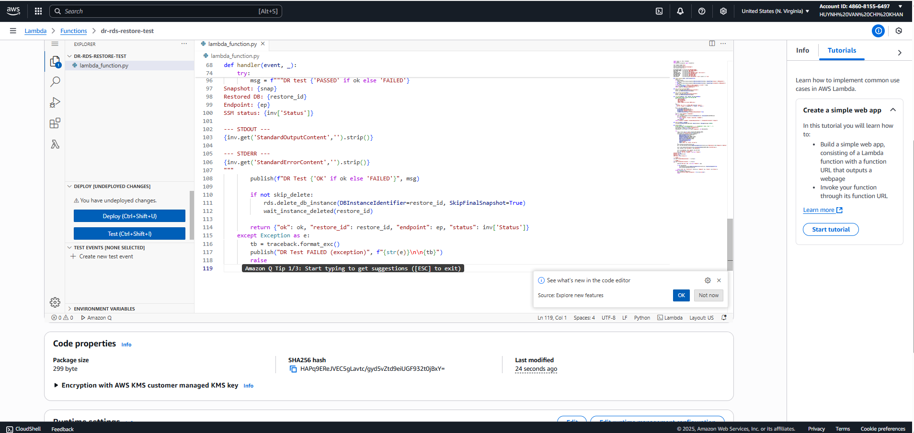 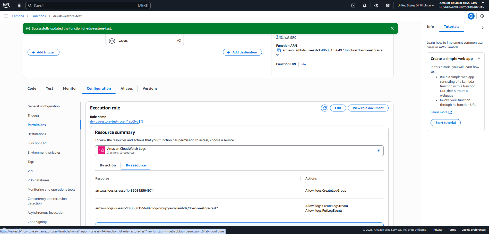 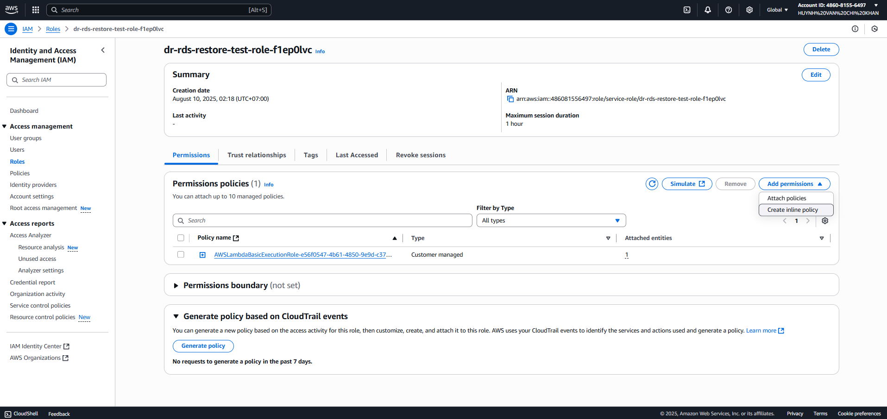
Inline IAM policy:
{
"Version": "2012-10-17",
"Statement": [
{
"Effect": "Allow",
"Action": [
"logs:CreateLogGroup",
"logs:CreateLogStream",
"logs:PutLogEvents"
],
"Resource": "*"
},
{
"Effect": "Allow",
"Action": [
"rds:DescribeDBSnapshots",
"rds:DescribeDBInstances",
"rds:RestoreDBInstanceFromDBSnapshot",
"rds:DeleteDBInstance",
"rds:AddTagsToResource",
"rds:ListTagsForResource"
],
"Resource": "*"
},
{
"Effect": "Allow",
"Action": [
"ec2:DescribeSecurityGroups",
"ec2:DescribeSubnets",
"ec2:DescribeVpcs"
],
"Resource": "*"
},
{
"Effect": "Allow",
"Action": ["ssm:SendCommand", "ssm:GetCommandInvocation"],
"Resource": "*"
},
{
"Effect": "Allow",
"Action": ["secretsmanager:GetSecretValue"],
"Resource": "arn:aws:secretsmanager:us-east-1:ACCOUNT_ID:secret:*"
},
{
"Effect": "Allow",
"Action": ["kms:Decrypt"],
"Resource": "*",
"Condition": {
"StringEquals": {
"kms:ViaService": "secretsmanager.us-east-1.amazonaws.com"
}
}
},
{
"Effect": "Allow",
"Action": ["sns:Publish"],
"Resource": "arn:aws:sns:us-east-1:ACCOUNT_ID:dr-alerts"
}
]
}
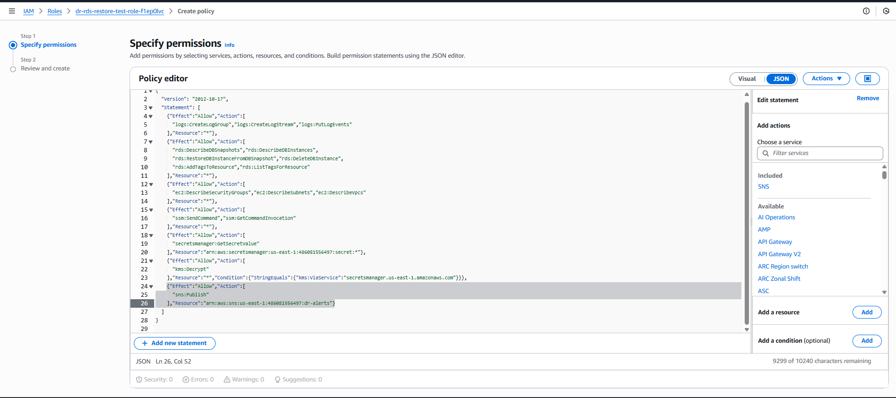 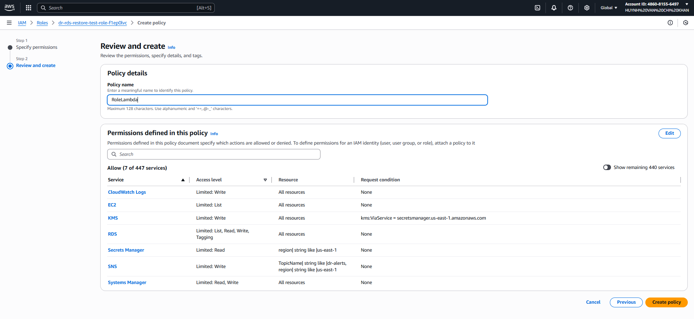 Configuration: timeout 15 minutes, memory ≥ 512MB. Test event:
{}or{ "forceSnapshotId": "does-not-exist" }. 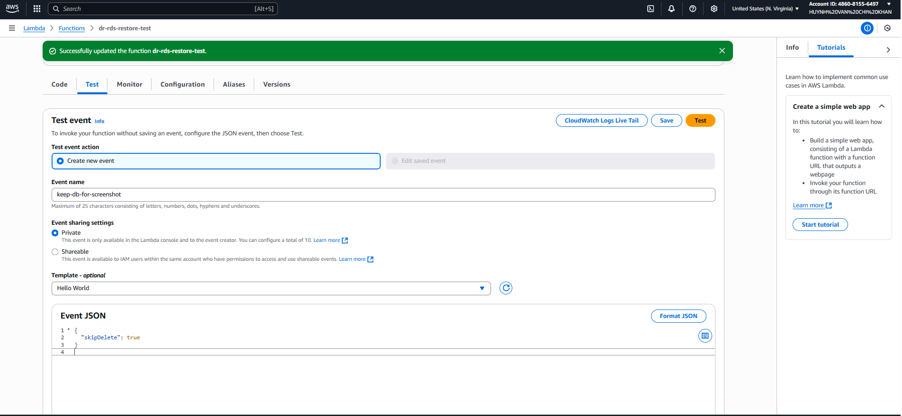 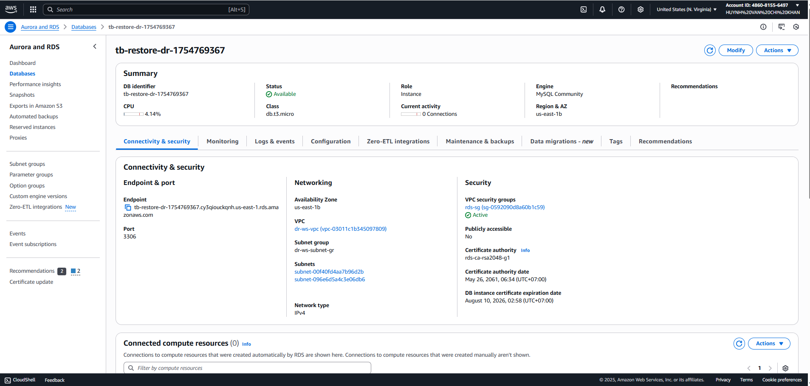 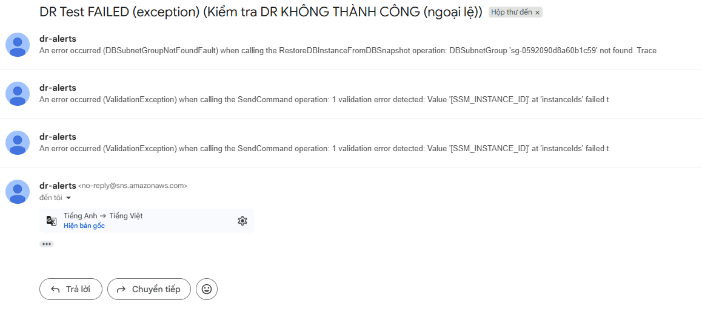